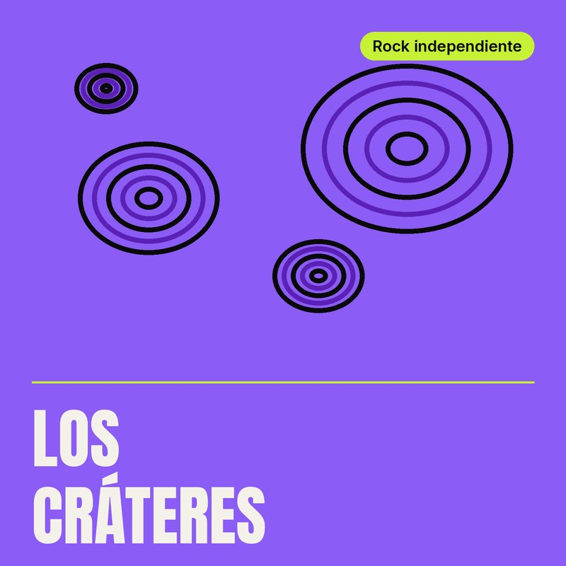

Los Cráteres
Rock independiente
Banda de rock indie con guitarras crudas y letras que hablan de la ciudad. Desde su primer demo autoeditado, construyeron su propio camino sin intermediarios.
Tracks
Merch oficial
Discos y entradas vendidos directo por el artista.